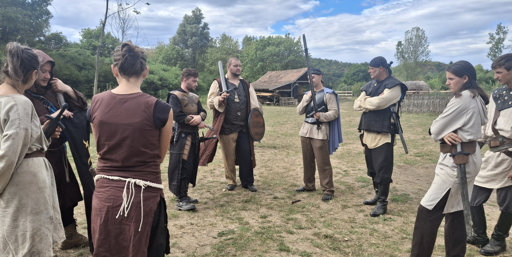

I.
Krónika
A Smaragd eseményeinek összefoglalása, a Csepkefalvába érkező három tábortól a végső összecsapásig.
A történetA bányavidék megnyitása

Miközben Admar háborút vívott Ogrullal, a bányavidékre varázskupola borult. Bárki megpróbált kijönni, odaveszett.
A Vas-ormok közelében (de a kupolán kívül) fekvő Csepkefalvára három csoport érkezett, hogy felderítse a történteket és megnyissa a bányákhoz vezető utat.
A király hatalmát a lovagok képviselték, a bányászok és kézművesek érdekeit a zsoldosokkal megerősített Céh képviselte, míg Tibald herceg Tulipános Rendje saját titkos céllal érkezett a vidékre.
A varázslatot csak a smaragdok erejével lehetett megtörni, de ezekből kevés maradt, s az is elszórva. A táborok között megindult versengés hamarosan háborúba fordult.
Végül kiderült, hogy az ármány mögött az ogruli varázsló, Feketekéz Eirvald állt. A történet Feketekéz elestével, és a kupola összeomlásával zárult.
I.
A Smaragd eseményeinek összefoglalása, a Csepkefalvába érkező három tábortól a végső összecsapásig.
A történetII.
A játék során használt és előkerült levelek, hírdetmények, parancsok, feljegyzések, kéziratok, ritkaságok és könyvek gyűjteménye.
Belépés a levéltárbaIII.
Fényképek a játékról.
Képek megtekintéseIV.
A játék eseményeihez és Admar világához kapcsolódó történetek, visszaemlékezések és novellák.
Írások olvasásaA Smaragd története lezárult, de szereplőinek döntései és tettei immár Admar történelmének részét képezik.